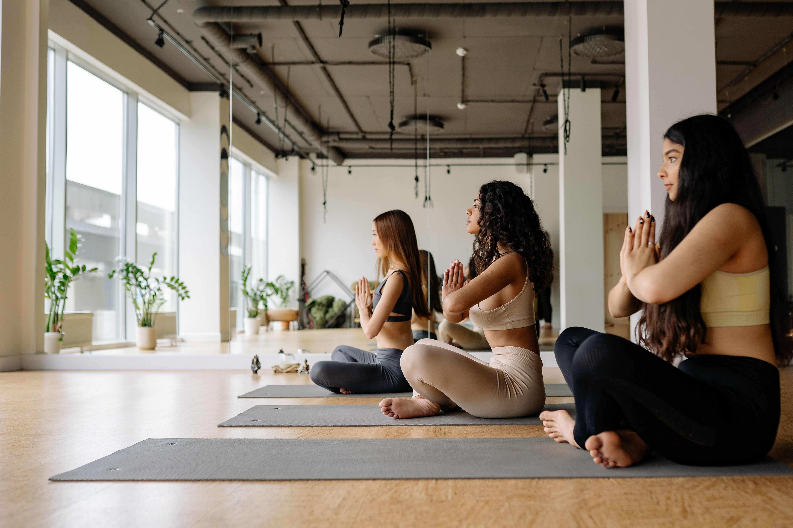

Class descriptions
We offer yoga, pilates, and movement classes 7 days a week. All are welcome.

Traditional Non-heated Yoga
-
Yoga Fundamentals
A level 1 mat class where the instructor will take more time guiding you into poses, explaining alignment principles and breathing techniques. You will be introduced to Sun Salutations as well as alignment based slow flow. A class that will include standing and seated postures as well as balance poses, gentle backbends and supported inversions. For the new student it’s a great place to learn alignment and build your yoga foundation for the continuing student an opportunity to refine your skills and continue to deepen your practice.
-
Gentle Stretch
Focusing on increasing mobility and flexibility, we learn the Basics of Alignment and Breath in the Essential Poses. Accessible to all students.
-
Vinyasa Flow
A mixed levels class that incorporates a creative sequence of postures linked together with the breath in a flow style practice. A balanced class for all yogis with modifications and variations offered when needed. Standing and seated poses along with balancing postures, backbends and inversions are offered. All are encouraged to practice at their own pace.
-
Chair Yoga
This is an adaptive Yoga Class for those students interested in experiencing the benefits of increased mobility, flexibility and strength without the rigor of a traditional Mat Yoga Class. The chair is used in all different ways to modify the poses to fit the needs of students who may be recovering from injury, have limited mobility, or just prefer a gentler approach to the practice.
-
Slow Flow
A class that incorporates a slow, gentle flow and longer held stretches at a pace to accommodate all students including beginners. The class finishes with restorative postures to calm the nervous system and cultivate a peaceful state of mind.
-
Sculpt & Stretch
Sculpt & Stretch combines low impact exercises with longer held intentional stretches designed to increase mobility and flexibility. We will incorporate micro movements using our own body weight to define and strengthen, following with deep stretches to lengthen tense and tight muscles. Experience deep release & recovery for the body.

Hot Yoga & Fitness
-
Hot Vinyasa / Hot Flow
Combine movement and breath for a challenging, mind-body practice. Explore the limits of your strength, flexibility, and balance in an active Vinyasa (flow) class. The practice includes Sun Salutations A & B as well as creative sequencing through standing and balance postures, backbends, seated postures and inversions.
-
Hot Core Yoga
A strong heated practice that combines Yoga and functional movement. We focus on core strength, building toward inversions, learning some anatomy and having fun! LYT method infused into this class, an innovative yoga method designed by a physical therapist to enhance mobility, increase flexibility, and reduce pain.
-
Hot Sculpt & Stretch
Warm Sculpt & Stretch combines muscle toning exercises with longer held intentional stretches designed to increase mobility and flexibility. We will incorporate micro movements using our own body weight, props and light weights to define and strengthen following with deep stretches to lengthen tense and tight muscles. Practice under the infrared heating panels to experience deep release & recovery for the body. (Note.. this class is heated and in the summer months and during busier classes the temperature can rise above 90 degrees.)
-
Warm Flow
A mixed levels flow class under the infrared heat. Expect room to be about 85-95 degrees and to be led through an alignment-based flow class. The class will include Sun Salutations and creative sequencing. All are welcome to come and work at their own pace.
-
Hot HIIT
This class combines 30 minutes of high intensity cardio and strength training with 15 minutes of yoga and stretching to balance the body. Kick start your metabolism with this fat burning class first thing in the morning. This class has the optional use of sandbags, weights and/or bands for added strength training.
-
Buti Yoga
Buti is a movement practice that fuses power yoga, tribal dance, and plyometrics into a high-intensity workout that transforms the body from the inside out. We train the core using the Spiral Structure technique created by Founder Bizzie Gold that transforms the way the body looks and performs almost instantly. Many students say they notice a change in their abdominal structure even during their first class. Whether you are an advanced yogini or a humble beginner, Buti will offer you a soulful journey to empowerment that will make you drip sweat and love every second.
-
Warm & Weighted
Step into an 85-degree studio for a full-body strength experience. This class combines controlled strength training with free weights, dynamic movement, and intentional breathwork. Expect slow, powerful reps, pulses and compound movements. You'll walk out stronger, grounded and fully energized.
-
Hot Pilates Fusion
Hot Pilates Fusion is a high intensity, low impact interval training class that is a fusion of Pilates and Barre. It's designed to strengthen the small muscles groups using light weights and other props to elevate the experience.
-
Hot Barre
This class offers a fusion of strength and stretch, incorporating the fundamentals of a ballet barre. Integrating weights and props to help target specific muscle groups while enlivening your core. Leave each class with that empowering afterglow of getting in a good sweat.

Specialty Classes
-
Kundalini Yoga & Gong
An uplifting blend of spiritual and physical practices, Kundalini Yoga incorporates movement, dynamic breathing techniques, meditation, and the chanting of mantras. The goal is to build physical vitality and increase consciousness. The class ends with the vibrational sound healing of a gong.
-
Candlelit Yin Yoga
A slower and more meditative practice, yin yoga gives space to turn inward and tune into both your mind and the physical sensations of your body. Through longer holding of poses yin yoga helps you stretch and lengthen these rarely-used tissues while also teaching you how to breathe through discomfort and sit with your thoughts.
-
Somatic Stretch & Sound
Unwind midweek with a 45-minute immersive experience designed to regulate your nervous system and invite deep rest. We begin with gentle, somatic movement—an invitation to soften, release, and return to the body. From there, crystal quartz bowls and layered tones create space to settle your breath, unwind what's been held, and restore balance. Through intentional sound and guided presence, this practice supports both physical relaxation and energetic alignment. Expect softness, resonance, and a subtle reset to carry you through the rest of your week.
-
Bootcamp
This non-heated, 45-minute workout class is designed to strengthen you on the inside and out! The use of dumbbells, bands, and your bodyweight will deliver an experience that will leave you feeling refreshed and energized. Bring your mat. All are welcome!
-
Aerial Yoga
This is an all-levels class that will leave you feeling free and light. The hammock is used as a prop to help you work through a series of standing postures, planks, and inversions allowing you to build heat, strength, and flexibility. Class concludes with savasana in the hammock for a truly blissful experience of being wrapped in silk, feeling safe and fully supported. Bring your yoga mat and come experience the fun and freedom of aerial yoga!